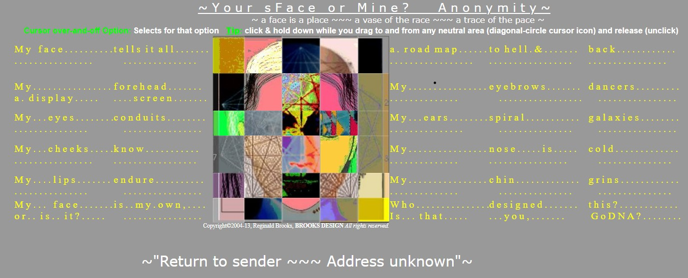

| Artist |
Description |
Thumbnail |
| JODI |
JODI is a net art group consisting of Joan Heemskerk and Dirk Paesmans. The
group was one of the first to use the Internet’s creative possibilities.
Already around 1994 they were beginning to use the Internet as material.
Jodi pioneered Web art in the mid-1990s. Jodi were among the first artists
to investigate and subvert conventions of the Internet, computer programs
and video and computer games.
[Source:
Net-Art]
|

Source: JODI
|
|
Anna Anthropy
|
queers in love at the end of the world is a hypertext game built on the
Twine platform in which the player experiences fleeting intimacy in a
ten-second narrative. In the upper left of the browser window, a timer
counting down the seconds prompts the reader to move quickly, advancing the
narrative by clicking highlighted action words with little time to
deliberate or savor the moments chosen before "Everything is wiped away."
Anthropy writes of the work, "If you only had ten seconds left with your
partner, what would you do with them? What would you say? It’s a game about
the transformative, transcendent power of queer love, and is dedicated to
every queer I’ve loved, no matter how briefly, or for how long."
[Source: Rhizome Staff]
|

Source: Web Archives
|
|
Reginald Brooks
|
Your sFace or Mine? Anonymity is centered on the enigma we call identity.
The upgrade gooses the interactivity-presentation by having the lead
activation (mouse/touch-over) hotspot run an animation of all the choices
within that respective grid. A complete and unique mix of animated and
static "parts" awaits the viewer's input. A slideshow and a short music
video demonstrate some of the possibilities.
What has come to even more focus - as the "parts" become even more
transient - is that, while the core of the work is centered on identity,
what remains throughout all the technological change and innovation is
prejudice. And while these advancements take us a few steps forward to
disarm such bias, it still requires us to embrace the differences to make a
difference.
[Source: Regainald Brooks]
|

Source: Reginald Brooks
|
|
Eryk Salvaggio
|
Eryk Salvaggio's "Absolut Net.Art" project distills the personal stylistic
tropes of a handful of standout net.art stars, effectively emulating their
work through the template of absolut vodka advertisements. The project
underlines the ease of style hijacking inherent in the digital realm.
[Source: Eryk Salvaggio]
|

Source: Rhizome Archives
|
|
Minerva Cuevas
|
La Sección Amarilla de la Migración is a transnational project conceived by
Minerva Cuevas in collaboration with the Rubin Center at the University of
Texas-El Paso. It aims to serve as both a practical and cultural guide for
migrants navigating the US-Mexico border, framing migration as a natural
phenomenon that connects humans and non-human species through their shared
movement across ecosystems.
At the heart of the project is a bilingual, two-hundred-page publication,
developed through an open call for contributions from artists, writers,
activists, and organizations on both sides of the border. The book puts
together a mixture of visual and literary art alongside practical
resources, providing solidarity, guidance, and comfort for migrants in
transit serving as both a cultural intervention and a practical resource.
Distributed for free at key locations across the Americas and online, the
publication seeks to build a sense of community while offering travelers
essential information and a cultural connection to the ecosystems they move
through.
This project places at the forefront of the conversation the necessity of
recognizing migration as part of broader social and environmental systems,
inviting ongoing dialogue between regional and international contributors.
The project emerges as a form of resisting the artificial borders imposed
by human policies. It acknowledges that borders are continually redefined
by natural forces, with the Chihuahua desert symbolizing a place where
human-imposed divisions are reshaped by the movements of both human and
non-human life seeking survival.
[Source: Doreen Rios]
|

Source: Web Archives
|